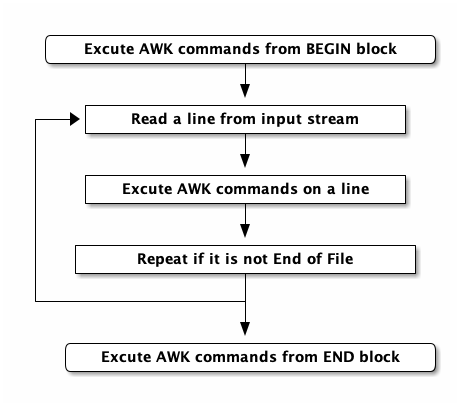

AWK 笔记
基本
工作流

程序结构
BEGIN {awk-commands} -- BEGIN block
/pattern/ {awk-commands} -- body block
END {awk-commands} -- END block
数据结构
record1(field1, field2, field3...) record2(field1, field2, field3...) ...
内建变量
$1, $2, $3...
表示record中的第几个field, 其中$0表示整个record,$NF表示最后一个fieldNR- number of record
保持当前record的数量, 对于每一个record, 此值会变.NF- number of field
保持当前record中field的数量, 对于每一个record, 此值会变.FILENAME
当前的输入文件名FS- field separator
field分割器, 默认是任何space和\tRS- record separator
record分割器, 默认是\nOFS- output field separator
field输出分割器, 默认是spaceORS- output record separator
record输出分割器, 默认是\n